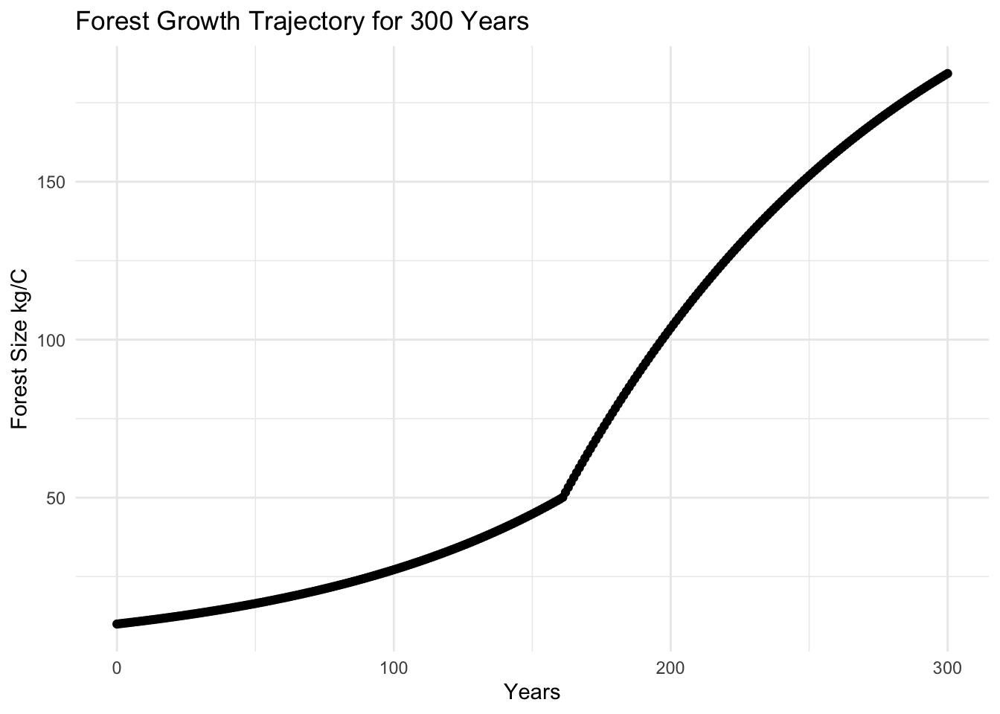
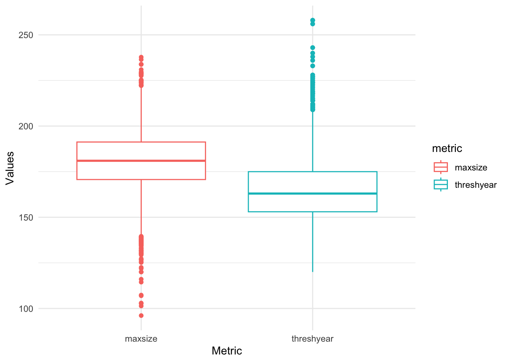

# Source function
source("R/forest_growth.R")Assignment 5
- Model forest growth.
- Run the model for 300 years, with initial parameters:
- canopy closure threshold (thresh) = 50 kgC
- carrying capacity (K) = 250 kg C
- exponential growth rate (r) = 0.01
- linear growth rate (g) = 2 kg/year
# Define inputs
parms <- list(K = 250, r = 0.01, g = 2)
C <- c(C=10)
# 300 years
times <- seq(0, 300, by =1)
# Use ODE solver for results
initial <- ode(y = C, times = times, func = forest_growth, parms = parms)- Graph.
# Graph results
ggplot(initial, aes(time, C)) +
geom_point() +
labs(x = "Years",
y = "Forest Size kg/C",
title = "Forest Growth Trajectory for 300 Years") +
theme_minimal()
- Run a Sobol global sensitivity analysis to explore maximum forest size.
# Initial forest size
Cinitial <- 10
# Test sensitivity for pre-canopy closure rate (r), post-canopy closure growth rate (g), and carrying capacity (K)
# Set the number of parameters
np <- 2000
K <- rnorm(mean = 250, sd = 250 * 0.1, n = np)
r <- rnorm(mean = 0.01, sd = 0.01 * 0.1, n = np)
g <- rnorm(mean = 2, sd = 2 * 0.1, n = np)
X1 <- cbind.data.frame(r = r, g = g, K = K)
# Repeat to get our second set of samples
K <- rnorm(mean = 250, sd = 250 * 0.1, n = np)
r <- rnorm(mean = 0.01, sd = 0.01 * 0.1, n = np)
g <- rnorm(mean = 2, sd = 2 * 0.1, n = np)
X2 <- cbind.data.frame(r = r, g = g, K = K)
# Fix any negative values and they are not meaningful
X1 <- X1 %>% map_df(pmax, 0.0)
X2 <- X2 %>% map_df(pmax, 0.0)
# Create Sobel object and get sets of parameters for running the model
sens_C <- sobolSalt(model = NULL, X1, X2, nboot = 300)
# Add param names
colnames(sens_C$X) <- c("r", "g", "K")
sens_C$X[1, ] r g K
0.00960824 2.24406827 232.02862619 # The ODE needs ALL of our parameters in a single list
# Initial size and times for which we want output
Cinitial[1] 10# Results for 300 years (evaluating every year)
simtimes <- seq(from = 1, to = 300)
parms <- list(r = sens_C$X[1, "r"],
g = sens_C$X[1, "g"],
K = sens_C$X[1, "K"])
result <- ode(y = Cinitial, times = simtimes, func = forest_growth, parms = parms)
colnames(result) <- c("time", "C")
# Turn it into a data frame
result <- as.data.frame(result)
# Extract our metrics of interest: maximum size
maxsize <- max(result$C)
print(paste0("Max forest size is ", round(maxsize, 2) , " kg/C at ", result$time[result$C == maxsize], " years."))[1] "Max forest size is 181 kg/C at 300 years."# Turn computing our metrics into a function
compute_metrics <- function(result, thresh) {
maxsize <- max(result$C)
idx <- which(result$C > thresh)[1]
idx <- ifelse(is.na(idx), length(result$C), idx)
threshyear <- result$time[idx]
return(list(maxsize = maxsize, threshyear = threshyear))
}
# Define a wrapper function to do everything we need - run solver and compute metrics - and send back results for each parameter
p_wrapper <- function(r, g, K, Cinitial, simtimes, odefunc, metricfunc) {
parms <- list(r = r, g = g, K = K)
result <- ode(y = Cinitial, times = simtimes, func = odefunc, parms = parms, method="euler")
colnames(result) <- c("time", "C")
# get metrics
metrics <- metricfunc(as.data.frame(result), thresh = 50)
return(metrics)
}
# Test
p_wrapper(r = 0.01, g = 2, K = 250, Cinitial = 10, simtimes = seq(from = 1, to = 300, by = 1),
odefunc = forest_growth, metricfunc = compute_metrics
)$maxsize
[1] 183.4948
$threshyear
[1] 163- Boxplot of results and Sobol indices.
# Now use pmap as we did before
allresults <- as.data.frame(sens_C$X) %>% pmap(p_wrapper, Cinitial = Cinitial, simtimes = simtimes, odefunc = forest_growth, metricfunc = compute_metrics)
# Extract out results from pmap into a data frame
allres <- allresults %>% map_dfr(`[`, c("maxsize", "threshyear"))
# Create boxplot
tmp <- allres %>% pivot_longer(cols = everything(), names_to = "metric", values_to = "value")
ggplot(tmp, aes(metric, value, col = metric)) +
geom_boxplot() +
labs(x = "Metric",
y = "Values") +
theme_minimal()
# Sobol indices
sens_C_maxsize <- sensitivity::tell(sens_C, allres$maxsize)
# first-order indices (main effect without co-variance)
rownames(sens_C_maxsize$S) <- c("r", "g", "K")
sens_C_maxsize$S original bias std. error min. c.i. max. c.i.
r 0.3956283 -0.001011793 0.02245788 0.3493744 0.4416371
g 0.2463862 0.002068913 0.02044389 0.2010800 0.2812343
K 0.3930363 -0.001390828 0.01806536 0.3620232 0.4293156# total sensitivity index -note that this partitions the output variance
rownames(sens_C_maxsize$T) <- c("r", "g", "K")
sens_C_maxsize$T original bias std. error min. c.i. max. c.i.
r 0.4046970 0.0007102515 0.016030566 0.3704248 0.4372400
g 0.2235808 0.0008377402 0.009267022 0.2029316 0.2396882
K 0.3529564 -0.0012218685 0.015330624 0.3231950 0.3824789- What parameters might climate change influence?
The results of my simulation mean that forest size is sensitive to changes in carrying capacity, exponential growth, and linear growth, but most sensitive to exponential growth (r). Climate change is likely to influence all three of these parameters, but warmer temperatures most likely encourage faster pre-closure canopy growth (r). This in turn influences the threshold year at which forest canopy closes and modeled growth rate changes.